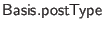

A web application is built from a series of modules, with one module, the last one appearing in the .urp file, designated as the main module. The signature of the main module determines the URL entry points to the application. Such an entry point should have type
, for any integer
, where
is a type synonym for top-level HTML pages, defined in
. If such a function is at the top level of main module  , with
, it will be accessible at URI /M/f, and so on for more deeply nested functions, as described in Section 12.10 below. See Section 3.1 for information on the prefix and rewrite url directives, which can be used to rewrite the default URIs of different entry point functions. The final URL of a function is its default module-based URI, with rewrite url rules applied, and with the prefix prepended. Arguments to an entry-point function are deserialized from the part of the URI following f.
, with
, it will be accessible at URI /M/f, and so on for more deeply nested functions, as described in Section 12.10 below. See Section 3.1 for information on the prefix and rewrite url directives, which can be used to rewrite the default URIs of different entry point functions. The final URL of a function is its default module-based URI, with rewrite url rules applied, and with the prefix prepended. Arguments to an entry-point function are deserialized from the part of the URI following f.
Elements of modules beside the main module, including page handlers, will only be included in the final application if they are transitive dependencies of the handlers in the main module.
Normal links are accessible via HTTP GET, which the relevant standard says should never cause side effects. To export a page which may cause side effects, accessible only via HTTP POST, include one argument of the page handler of type . When the handler is called, this argument will receive a value that can be deconstructed into a MIME type (with  ) and payload (with ). This kind of handler should not be used with forms that exist solely within Ur/Web apps; for these, use Ur/Web's built-in support, as described below. It may still be useful to use with form requests submitted by code outside an Ur/Web app. For such cases, the function may be useful, breaking a POST body of type application/x-www-form-urlencoded into its name-value pairs.
Any normal page handler may also include arguments of type , which will be handled specially. Rather than being deserialized from the current URI, such an argument is passed the whole query string that the handler received. The string may be analyzed by calling on it. A handler of this kind may be passed as an argument to to generate a URL to a page that may be used as a ``callback'' by an external service, such that the handler is allowed to cause side effects.
When the standalone web server receives a request for a known page, it calls the function for that page, ``running'' the resulting transaction to produce the page to return to the client. Pages link to other pages with the link attribute of the a HTML tag. A link has type , and the semantics of a link are that this transaction should be run to compute the result page, when the link is followed. Link targets are assigned URL names in the same way as top-level entry points.
HTML forms are handled in a similar way. The attribute of a form tag takes a value of type , where is a kind- record of the form fields used by this action handler. Action handlers are assigned URL patterns in the same way as above.
For both links and actions, direct arguments and local variables mentioned implicitly via closures are automatically included in serialized form in URLs, in the order in which they appear in the source code. Such serialized values may only be drawn from a limited set of types, and programs will fail to compile when the (implicit or explicit) arguments of page handler functions involve disallowed types. (Keep in mind that every free variable of a function is an implicit argument if it was not defined at the top level of a module.) For instance:
Ur/Web programs generally mix server- and client-side code in a fairly transparent way. The one important restriction is that mixed client-server code must encapsulate all server-side pieces within named functions. This is because execution of such pieces will be implemented by explicit calls to the remote web server, and it is useful to get the programmer's help in designing the interface to be used. For example, this makes it easier to allow a client running an old version of an application to continue interacting with a server that has been upgraded to a new version, if the programmer took care to keep the interfaces of all of the old remote calls the same. The functions implementing these services are assigned names in the same way as normal web entry points, by using module structure.
The HTTP standard suggests that GET requests only be used in ways that generate no side effects. Side effecting operations should use POST requests instead. The Ur/Web compiler enforces this rule strictly, via a simple conservative program analysis. Any page that may have a side effect must be accessed through a form, all of which use POST requests, or via a direct call to a page handler with some argument of type . A page is judged to have a side effect if its code depends syntactically on any of the side-effecting, server-side FFI functions. Links, forms, and most client-side event handlers are not followed during this syntactic traversal, but <body onload={...}> handlers are examined, since they run right away and could just as well be considered parts of main page handlers.
Ur/Web includes a kind of automatic protection against cross site request forgery attacks. Whenever any page execution can have side effects and can also read at least one cookie value, all cookie values must be signed cryptographically, to ensure that the user has come to the current page by submitting a form on a real page generated by the proper server. Signing and signature checking are inserted automatically by the compiler. This prevents attacks like phishing schemes where users are directed to counterfeit pages with forms that submit to your application, where a user's cookies might be submitted without his knowledge, causing some undesired side effect.